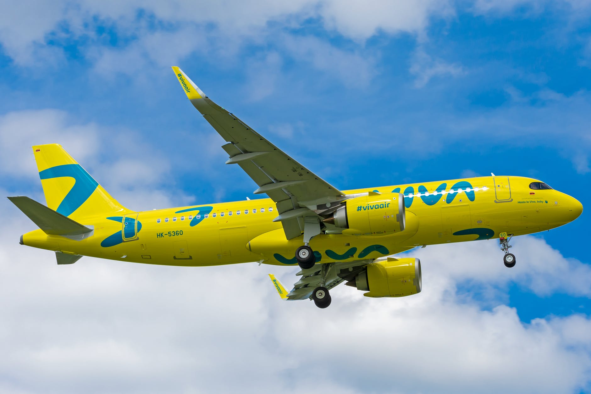

Курс більше не зросте? Коли долар остаточно "вгамується"
Національний банк України розрахував оновлену вартість української валюти до долара та євро на 17 лютого
Національний банк України (НБУ) розрахував такий офіційний курс долара та євро до гривні на четвер, 17 лютого: 1 долар США 28,24 грн 28,09 грн -0,15 1 євро 32,02 грн 31,93 грн -0,09 Порівняно з курсом НБУ на середу, 16 лютого, курс долара впав на 15 копійок, а євро – на 9 копійок. Найближчим часом гривня зупиниться у межах 28–28,2 гривні за долар, проте учасники ринку готові до будь-яких рухів у разі надходження нової порції негативу
ДжерелоПольща змінює умови: як тепер працюватимуть українські далекобійники
Розгляд цього питання був на порядку денному майже пів року
Польща та Україна підписали угоду про збільшення кількості додаткових дозволів на вантажні автоперевезення. Про це повідомив заступник міністра інфраструктури України Мустафа Найєм у Facebook. Найєм зауважує, що перемовини та консультації з польськими партнерами велися майже пів року. За інформацією Мінінфраструктури України, с торонами узгоджено: — До кінця серпня 2022 року здійснити додатковий обмін дозволами у кількості 20 000 тисяч транзитних дозволів для українських перевізників та 20 000 універсальних дозволів для польських перевізників. — Напрацювання спільного Плану дій, спрямованого на значне покращення ефективності перетину міжнародних автомобільних пунктів пропуску України та Республіки Польща. Відповідний план дій буде узгоджено з представниками митних, прикордонних та інших служб України та Республіки Польща не пізніше кінця лютого 2022 року. — Після реалізації погодженого спільного Плану дій, про який йдеться у п.2, у листопаді 2022 року буде видано для обох сторін додатково по 10 000 дозволів на здійснення міжнародних вантажних автомобільних перевезень.
ДжерелоВ Україні подорожчало м'ясо: скільки коштує 1 кг свинини, яловичини та курятини
Ціни на свинину зростають значно повільніше, ніж на інші види м'яса
В Україні з початком 2022 року розпочалося подорожчання м'яса. Зокрема, ціни на охолоджену свинину в січні були в середньому на 7,7% вище, ніж рік тому, водночас яловичина подорожчала на 31%, а куряча тушка та філе – на 28% та 30,5% відповідно. Про це свідчать дані Асоціації "Свинарі України" (АСУ). Аналітики зазначають, що свинина подорожчала через глобальні інфляційні процеси та підвищення цін на живця на початку 2022 року. Наприклад, ціна закупівлі живих тварин у січні 2022 року була у середньому на рівні 47 грн/кг. Однак такий рівень не покриває витрат через стрімке подорожчання енергоносіїв та подальше зростання вартості кормів.
ДжерелоОдин податок замість трьох: як зміняться зарплати українців
Влада планує об'єднати всі зарплатні податки в один – кому це буде вигідно, а хто втратить гроші

Українців чекають наступні податкові нововведення. Незважаючи на те що з нового року в Україні вже внесли зміни до Податкового кодексу, тепер представники влади говорять про те, що готується нова податкова реформа. І хоча підсумкового законопроєкту поки що немає, основні його положення озвучені. "Сьогодні" розбиралися, що може змінитися для тих українців, які працюють легально й отримують білу зарплату. Одна з основних ідей, яку декларують депутати від "Слуги народу", коли кажуть про майбутню податкову реформу, – це зниження оподаткування фонду оплати праці. Передбачається, що замість трьох податків, які нині стягують з роботодавця та працівника, буде один. Якщо тепер роботодавець сплачує 22% єдиного соціального внеску (ЕСВ), а з працівника відраховують 18% як податок на доходи фізосіб (ПДФО) та 1,5% військового збору (ВС), то планується замінити ці три податки одним зі ставкою 30%. Протягом п'яти років ставку податку планують знижувати на 1% за рік – так, щоб у результаті вона становила 25%. Альтернативний законопроєкт підготували депутати від "Голосу". Щоправда, у їхній редакції ставка єдиного податку на трудові доходи має становити 29% і знижуватися на 3% за рік. Отже, через три роки після набуття чинності новації ставка податку на працю становитиме 20%.
ДжерелоПоки "немає війни та ракет". У Ryanair відповіли, чи скасують рейси до України
В авіакомпанії не відмовляються від польотів до нашої країни на тлі можливого вторгнення РФ
Авіакомпанія Ryanair не припинятиме польоти до України, поки не з'явиться офіційна заборона від європейської влади Про це заявив гендиректор авіакомпанії Майкл О'Лірі, пише Reuters. Він зазначив, що лоукостер продовжить доставляти пасажирів до українських аеропортів, поки "немає війни і ракет". Ми не бачимо причин для припинення польотів, поки європейська влада не скаже нам, що літати небезпечно", – сказав О'Лірі на пресконференції у Лісабоні. У той же час авіакомпанія Sky Up прийняла рішення про зупинення польотів, посадивши свій літак у Кишеневі та не доставивши до України пасажирів. Також з'явилася інформація про те, що британські страхові компанії відмовляються покривати страхові випадки, які можуть статися з літаками у повітряному просторі України. 13 лютого під час термінового засідання уряд ухвалив рішення виділити 16,6 млрд грн, щоб гарантувати безперебійність польотів у повітряному просторі України.
Джерело